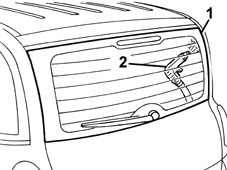

7035A Check there is no penetration through the fixed windows (windscreen and rearscreen)
- Path
- Test > 70 FITTINGS > 7035 BODYSHELL WINDOWS > 7035A Check there is no penetration through the fixed windows (windscreen and rearscreen)
- Kind
- test / check procedure
- Applies to
- all engines; all production periods
- Interactive page
- https://sloeber94.github.io/elrnDB-fMltpl/en/#/2892413
Applies to: all engines; all production periods
Apply a soapy water solution along the whole perimeter of the window.
From inside the interior compartment, blow compressed air along the whole perimeter.
If necessary, move the trim pieces to the side and upwards.

Visually check whether air bubbles have formed on the outer surface: this makes it possible to localize any points where the sealant is insufficient or damaged.
If the sealant fault is on the vertical pillars, you can move aside the pillar trim and from the inside inject "rubber seal" type sealant.
If the sealant fault is at the top, you can move aside the ceiling trim and from the inside inject "rubber seal" type sealant.
If the sealant fault is at the bottom, you can move aside the windscreen base trim (for the front window) or parcel shelf (for the rear window) and from the inside inject "rubber seal" type sealant.
If the sealant fault is widespread over large areas, the overall seal of the window is not ensured, so the window has to be removed and resealed completely (see PROCEDURES OP. 7035A14 OUTER WINDSCREEN MOULDING - R R7035B12 Tailgate rearscreen (bonded type) WINDOW GLASS - R.R. - Includes. cleaning edges of glass and housing in tailgate).